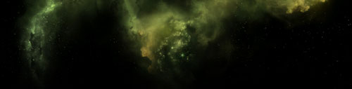
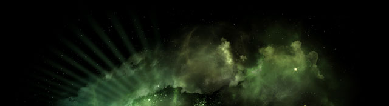

Начало > Новшества издания Космические Рейнджеры HD: Революция
|
Начало > Новшества издания Космические Рейнджеры HD: Революция
|
| Новшества издания Космические Рейнджеры HD: Революция  Нововведения издания по сравнению с предыдущей версией игры: • Крупная дополнительная сюжетная линия. • Более развитый ИИ противников. Теперь они могут использовать форсаж и уникальное оборудование. • Новая сторона в конфликте, отстаивающая свои интересы. • Более 20 новых текстовых квестов. • Более 30 новых карт для планетарных боев. • Более 50 новых типовых правительственных заданий. • Более 20 новых музыкальных композиций. • Новое уникальное оборудование. • Новый режим игры: космические квесты. • Большое количество новых игровых элементов, сюрпризов и секретов. • Доработанная графика с поддержкой высоких разрешений экрана. • Поддержка нового оборудования и современных операционных систем. • Добавлен режим тонкой настройки. • Реализованы новые виды вооружения и артефакты. • Модификации вооружения с уникальными свойствами. • Усовершенствованное поведение искусственного интеллекта: теперь компьютерные пилоты могут использовать форсаж и избирать разные стратегии ведения боя, а пираты могут собираться и атаковать с пиратских баз, а в случае, если нападение провалилось, бегут из системы. • Реализована возможность создания модификаций игры. • Добавлена функция MAKEDUMP, являющийся инструментарием модификации игровых сохранений.  |